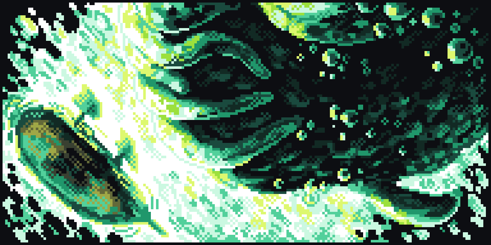

Hello! Welcome to my blog for Mythical Whalers,
Firstly I would like to give a huge thankyou to Trevor Richard for helping me set up this site.
Without his help I would likely still be stuck trying to configure a ssh key for a linode server.
I would also like to give a shout out to my team, Francesco, Valera, and Fabio.
Their talents and passion have brought so much life to this project, I feel incredibly lucky to be working with them.
I suppose I should talk a bit about why I'm making Mythical Whalers and what my vision is for the project. Maybe a good place to start would be telling the story of how I got started working on Mythical Whalers.
A year and a half ago I was walking home through the snow on a cold winter evening in Canada. I had just finished a 14 hour shift working on an ambulance as a paramedic. I was exausted but a few friends were on their way over to my small apartment, they had talked me into trying magic mushrooms that evening, it was something I was apprehensive of doing but curiosity is a powerful force. At around 7pm we all ingested 2.75 grams of Golden Teachers. Half an hour into the trip I was regreting my decision, I was battling nausea and emotions I wasn't aware a person was capable of feeling.

It was remarkably unpleasant.
Waves of nausea washed over me and reality started to disolve. About an hour into the trip and still feeling uncomfortable we put on a nature documentary and settled into my couch.
A few minutes into the film an arctic iceshelf crashed into the ocean, in that moment I was hit by a massive pulse of energy, I could feel blood pulse through every artery in my body. Colors became brighter and my vision became crysal clear. The most signifigant change though was the new demension I was now inhabiting, or maybe more acuratly perception of a layer of the world I could not normally see.
I could see things in a way I never had before, it though my third eye had opened and could now see, a barrier in my mind had disolved and all the forces that made up the entities of my subconcious mind that dictated my actions were visable. Touchable even, I had become the root administrator for my operating system where before I was merely a user with parental controls enabled. It was a lot to take in. ngl.
During this time I became claustrophobic inside my tiny apartment and had a powerful desire to get under the sky. So me and one of my homies put on our parkas and went outside for a walk while everyone else decided to stay inside where it was warm. As we walked I realized I had a deep sense of disatisfation for my current career, as a Paramedic none of the work I did had any permenance. All I could do was provide band-aid solutions for largely unsolvable biological problems. Nessisary perhaps, but an excercise in futility if there ever was one. For a lot of people dragging fentayl OD's out of bathrooms provides them with a healthy sense of meaning. For me it was a constant reminder of the degenerate state of our depressed society.
I wasn't feeling it anymore after 6 years, the mushrooms were saying it was time to move on.
I realized I wanted to build something with permenance, something that would outlast me. I wasn't sure what I wanted to create but I had an intuition that constructing something in the digital world was the way to trancend the limitations of the physical world. Learning to code seemed like the first step in manifesting that vision, Perhaps the digital world could be a silcone life raft and code was the portal to get on to it.
Over the following months I started learning the coding language python, it was surprising intuitive and soon I was able to create simple applications. After a few begginer projects I wanted to create something more advanced. I started using the pygame library to create a simple tilemap with a sprite a player could move around, it was all so easy... how hard could it be to make a game?